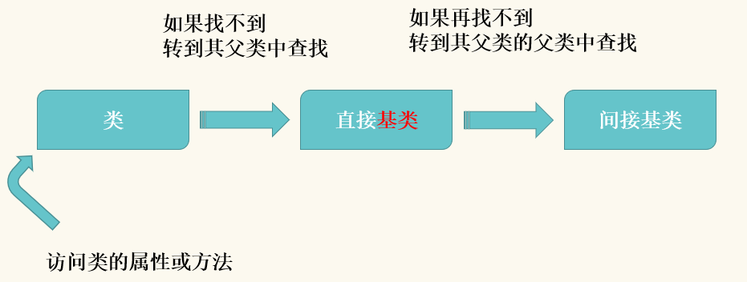

继承
定义类的时候，在类名后面的括号里填继承的类的类名
顶级基类object
__bases__：查看类的直接父类
继承搜索
访问类的属性或方法 --> 如果找不到，转到其父类中查找 --> 如果再找不到，转到其父类的父类中查找

多继承
当继承多个父类时，如果父类中有相同的方法，那么子类会优先使用最先被继承的方法
重写
当子类继承父类之后，如果子类不想使用父类的方法，可以通过重写来覆盖父类的方法
super用法
重写父类方法之后，又需要使用父类的方法
方法一：父类名.方法名
方法二：super 函数可以调用父类的方法
类在生成时会自动生成方法解析顺序
可以通过调用类的__mro__属性或者mro方法来查看类的继承关系
object是所有类的父类
Mix - in 设计模式
由多个模块组成一个整体
最好，多继承就一层，且是最后一层
魔术方法
一种特殊的方法，前后有两个下划线
特点：不需要人工调用，在特定的时候自动执行
魔术方法之运算方法
不同运算符调用不同的魔术方法（了解即可）
__add__ # x+y __sub__ # x-y __mul__ # x*y __mod__ # x%y
__iadd__ # x+=y __isub__ # x-=y __imul__ # x*=y __imod__ # x%=y
__radd__ # y+x __rsub__ # y-x
str和repr原理（str优先级大于repr）
在python中，str和repr方法在处理对象的时候，分别调用的是对象的__str__和__repr__方法
print打印对象，调用str函数，如果对象没有定义__str__方法，则调用__repr__方法处理
在交互模式下，直接输出对象，显示 __repr__ 的返回值
__call__方法
正常情况下，实例是不能像函数一样被调用的，要想实例能够被调用，就需要定义 __call__ 方法
类中的一些查询相关信息的方法(了解既可)
__class__ 查看类名 格式： 实例.__class__
__dict__ 查看全部属性、返回属性和属性值键值对形式 格式：实例.__dict__
__doc__ 查看对象文档，即类中(用三个引号引起来的部分) 格式：类名.__dict__
__bases__ 查看父类 格式：类名.__base__
.__mro__ 查看多继承的情况下，子类调用父类方法时，搜索顺序 格式：子类名.__mro__ 实例.__class__.__mro__